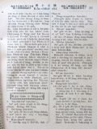

Languages
台文
｜
中文
｜
日本語
｜
English
字體
小
｜
中
｜
大
首頁
/
白話字數位典藏
白話字數位典藏全文檢索
查詢模式
選擇年代
清國時代(1885-1895)
日本時代(1895-1945)
戰後(1945-1969)
1885-1895
1896-1905
1906-1915
1916-1925
1926-1935
1936-1945
1946-1955
1956-1965
1966-1969
1970-1980
1980-1990
1990-2000
2000-2010
2010-
選擇文類
詩
散文
小說
戲劇
傳記
選擇作者
陳清忠
陳清義
編輯部
柯設偕
吳天命
明有德
偕叡廉
周天來
劉華義
王守勇
林茂生
陳添旺
柯維思
王占魁
賴仁聲
陳瓊琚
雪峰逸嵐
吳清鎰
郭水龍
蕭樂善
許水露
葉金木
陳金然
章王由
廖得
鄭連坤
潘道榮
楊士養
梁秀德
劉約翰
周淑慧
高金聲
林燕臣
黃六點
蔡愛義
許有才
主筆
巴克禮
郭朝成
陳鳩水
張基全
陳明清
陳能通
拾穗生
顏振聲
卓恆利
傳道局
胡文池
劉主安
鄭兒玉
蔡安定
顏春安
柯撒該
Google Search
Yahoo Search
全部
刊名
標題
標題(教羅)
全文
全文(教羅)
作者
第30頁，共41頁(共813筆資料) 0.72679400444031sec
1
...
28
29
30
31
32
...
41
To Page
GO
文字列表
圖文列表
排序
日期
文類
刊名
作者
影像
[1926-10 芥菜子 文類-散文 作者-蔡安定/Chhoà An-tēng]
(1)
聖冊 [ Sèng-chheh ]
聖冊。 I、詩人佮聖冊。 佇世間無有一本冊比聖冊較奇怪，kan-ta對文藝彼爿共伊看起來，也無半本佮伊會比對得。這是歐美的文學者佮詩人所證明--的。詩人コリンス到老的時有放sak一般的研究，逐擺攏是kan-ta 帶一本新約出外旅行。 II、文士佮聖冊。 早時佇法國一个反對基督教的讀冊人，佇伊的桌屜仔內揣著幾若張毋捌冊名佮彼个著者的斷片。伊本身 tú-tú是親像別的反對者攏是攻擊聖經，所以家己也攏毋捌讀。伊所揣出的紙片所印的就是Khap-pa-kok 的祈禱。 III、食人島的人佮聖冊。 早前是人所驚畏的食人種族，現時有得著基督教的感化，所以in 的性質攏變換了了，做一个成做溫和，...
[1926-12 芥菜子 文類-散文 作者-蔡安定/Chhoà An-tēng]
(2)
信仰佮行為 [ Sìn-gióng kap hêng-uî ]
信仰佮行為 1、 無言的感化。 有一个無神論的人佮ヘネロンsaⁿ-kap蹛三日久，伊本身無欲承認有這个真神，所以伊想伊的確袂變做基督教的信者。總是佇佮伊做陣的中間，有予伊的人款佮信仰拍著伊的心肝。後來伊才講「若閣蹛佇遮較久，我雖然無teh希望，毋kú袂免得著變做基督教的信者。」 ヘネロン無用言詞來苦勸伊著來信，也無佮伊議論信仰上的問題，總是伊家己驚了著放sak伊平生的無神論來信真神。這就是對ヘネロン恬恬的感化。 講話來傳傳道理，的確是要緊，毋kú無言的感化也有大氣力。 2、 親切的感動。 有一个勞動者teh拖車peh上kiā，因為貨物真重，所以才袂照所愛通peh上去。...
[1928-4 台灣教會報 文類-散文 作者-陳金然/Tân Kim-jiân]
束縛才是自由 [ Sok-pa̍k chiah sī chū-iû ]
束縛才是自由 陳金然 1928.04.01 517卷p.4-5 自由人人愛，若是無逐个得著，有的親像自由，其實是無。普通人teh講自由，敢是講跤手無掛鎖鏈號做自由，較少人teh想意志有夯枷抑無？近來有自稱新思想家teh主將自由是衝動的滿足，致到濟濟人掠放縱做自由，因為按呢紲掠濟濟號的事來做犧牲，親像戀愛抑是結婚chiah 的重要的代誌，人倫的大事in亦the̍h彼兩字自由來加tì-leh，紲將自由戀愛做自由亂愛，抑是做自由亂來，亦用自由結婚做自由亂婚，抑是做自由亂倫，實在真可惜，將神聖的人倫予伊成做野獸的衝動滿足的機關。 總是有較深想的人in就無掠彼號做自由，是掠靈性的發動，抑是...
[1928-10 台灣教會報 文類-散文 作者-陳金然/Tân Kim-jiân]
關仔嶺的一日 [ Koan-á-niá ê Chit-ji̍t ]
關仔嶺的一日 陳金然 1928.10.01 523卷p.6-7 若捌到關仔嶺--ê無一个無予遐的 san-chí水明驚--著，也濟濟穩當想起古早希臘國也是相siāng佇這款的環境來造成in 的國度佮in 的文明。希臘的國是建設佇島嶼的所在，四圍景緻真好，天產極豐富。人攏看現世做樂園，in較無對重宗教，是對重智識佮藝術，in 的神明是in想袂到--ê，in 的上帝是袂捌的上帝(行傳17：23)，所以對佇宗教in不止冷靜。In 的宗教心無親像埃及，印度，巴比倫，亞述，chiah 的國，有的受尼羅河佮Sa-oah-lah沙漠的壓迫，有的受Pek-lat抑是Hi-tí-kiat大河佮A-l...
[1934-5 台灣教會公報 文類-散文 作者-陳金然/Tân Kim-jiân]
聖經 [ Sèng-keng ]
聖經 1934.05 590卷 p.10 (陳金然) 論今仔日的聖經，有新約，舊約，總稱叫做聖經。這兩字 「聖經，」大概是對英語的 「The Bible」抑是「Holy Scripture」翻譯--的。 總是「Bible」是對希利尼話 「Ta Biblia」(冊)提來用；但是用這句做聖經的意思，是用佇舊約外典Ben Sirach智慧的冊的頭序--裡做第一早。到舊新約合做一本的時，也猶原是按呢咧用。這句雖然袂通十分表明聖冊的意思，猶過其實「Bible」佇今仔日是成做「冊中的冊」啦！ 「Holy Scripture」是希利尼話的 「Hogia Grapha，」拄拄是聖經的意思，請看太...
[1934-6 台灣教會公報 文類-散文 作者-陳金然/Tân Kim-jiân]
舊約書序說 [ Kū-iok-su Sū-soat ]
舊約書序說 1934.06 591卷 p.7-8 (陳金然) [接紲5月號的第10面「聖經」彼篇。彼篇「聖經」是欲做這个序說的頭序]。 I. 舊約書的話語 舊約書的母胎自然是希伯來(以色列)民族，所以in的話叫做希伯來話，到耶穌以前人猶咧用；總是後來是做學者研究的對象nā-tiāⁿ。現今Pa-le̍k-su-thèng所有咧用的「新希伯來話，」自然佮這有多少各樣。論這款話，亞述人共號做「西國的話」，聖冊記者自稱做「迦南的腔口」(賽18：18)，抑是「猶大的話」(II王18：26，28；尼13：24)。總是拉比是稱伊做「聖語」(Targum是「經語」經學士的話，律法的話」)。若是P...
[1934-7 台灣教會公報 文類-散文 作者-陳金然/Tân Kim-jiân]
舊約書序說 [ Kū-iok-su Sū-soat ]
舊約書序說 (陳金然) 1934.7，no.592，pp.6-7 II. 希伯來字佮抄寫的材料 舊約書的話語既然是希伯來話，就所用的文字自然是希伯來字。所以咱袂免小可知這个希伯來字的經過。人teh議論古早以色列人所用的文字有兩款：(1) 140 B. C.--135 A. D.猶太人所用的「錢」的字，就是in在來的字；摩西的律法也是用這寫--的。摩西的律法也是用這寫--的。(2)舊約的抄本所用彼號「角字」(角文字)原來是亞述的文字，Í-sū-lat傳入佇猶太人的中間--的(Green)，Talmud也按呢傳。總是後來這號「角字」那有勢力，人紲講這个是希伯來的文字。 照H. W...
[1934-8 台灣教會公報 文類-散文 作者-陳金然/Tân Kim-jiân]
舊約書序說 [ Kū-iok-su Sū-soat ]
舊約書序說 1934.08 593卷 p.5-7 (陳金然) (接前號第6面) III. 經學士 - 書記官 佇新約裡有時人稱呼叫經學士，教法師(教律法的先生)，博士；其實這3个名，攏siāng一項的意思。有時特別尊稱做法利賽的經學士(可 2：16)，猶過其實就是法利賽人。總是毋通拍算新約時代的經學士，拄拄佮起初的經學士攏siāng款。因為經學士的工，是(1)研究猶太人的律法，(2)解釋律法，(3)抄寫律法來流傳正本佇後代。按呢，就是新約時代的經學士是律法家，若是初初的經學士是咧 (1)抄寫(編輯)宗教文學(聖經 - 律法)，(2)學者，(3)是解釋家。Taⁿ咱暫時來想這个書記官...
[1934-9 台灣教會公報 文類-散文 作者-陳金然/Tân Kim-jiân]
舊約書序說 [ Kū-iok-su Sū-soat ]
舊約書序說 (陳金然) (接前號第7面) 1934. 9，no. 594，pp. 6-8 IV. 舊約書的背景 我信聖經是上帝的話，是人的經驗最高懸位的記錄。佇彼背後，有活活的上帝的啟示佇teh。因為按呢，自然有時代的表現，閣也有穿環境的衫佇teh。所以咱著知上帝的話對甚物人，對甚物機因來啟示佇歷史裡！這是咱欲明白上帝的啟示的本旨，第一重要的問題。 原來時代有時代特殊的話語，親像現代逐項攏要緊充實，所以不論甚物，都著究勘到彼个長，闊，懸，深 (弗 3：13)。換話來講，就是著立体的的看法。 宗教欲表現伊的思想，猶原著借用時代的話語。對按呢實在欲研究聖經，愛了解彼內...
[1934-10 台灣教會公報 文類-散文 作者-陳金然/Tân Kim-jiân]
舊約書序說 [ Kū-iok-su Sū-soat ]
舊約書序說 (陳金然) (接前號第7面) 1934. 10，no .595，pp .4-5 IV. 舊約書的背景 2 . 受巴比倫的影響 以賽亞雖然捌預言耶路撒冷的堅固，若是對in的違背上帝，致到佇尼布甲尼撒的面前是無抵抗；其實是袂會抵抗。佇B. C. 586，遐的百姓無論是有權--的，抑是有學問--的，攏受掠到巴比倫。彼个予大衛興盛的耶路撒冷，今變做荒埔；彼个teh顯明所羅門的行伍彼間聖殿，今變做火灰。昨日猶teh教奴僕行按呢，伊就行按呢，今仔日變做是通可憐的奴隸的地步。 佇這時in的生活閣拄著大變換。佇in的心肝頭不時有這項的大問題。In teh誇口是上帝的選...
[1934-11 台灣教會公報 文類-散文 作者-陳金然/Tân Kim-jiân]
舊約書序說 [ Kū-iok-su Sū-soat ]
舊約書序說 (陳金然) (接前號第5面) IV. 舊約書的背景 1934. 11，no. 596，pp. 6-8 3. 受希利尼人的影響 佇B. C. 第4世紀，亞力山大對馬其頓的一角興起，紲收入當時世界的大帝國波斯的大版圖 (B. C. 332)。伊對佇伊所佔領的地，有用巧妙的政策；對按呢希利尼的文化普及佇逐所在；深入佇逐方面。 猶太人對受掠以後，四散徛起佇埃及的各地方。這霎散散踮佇地中海的沿岸；其中亞歷山大，倚有25萬人佇遐徛起。In在來有漸漸棄拺家己國語，總是對希臘文化的進入，紲漸漸用希利尼的俗語，風俗也受不止大的影響。 Taⁿ這擺的影響實在無較輸第1所講「...
[1934-12 台灣教會公報 文類-散文 作者-陳金然/Tân Kim-jiân]
舊約書序說 [ Kū-iok-suSū-soat ]
舊約書序說 陳金然 (接前號第8面) 1934.12，no.597，pp.7-8 V. 舊約書的分類佮順序 咱今仔日咧讀的舊約，是對濟濟種的冊來成立，攏總是39卷。人大概共伊分做3類：- 1)歷史(17卷)創世記-以斯帖。 2)文學(5卷)約伯-雅歌。 3)預言(17卷)以賽亞-瑪拉基。 咱知彼中間有的分前後，抑是上下，- 撒母耳，列王，歷代。-總是希伯來原文無按呢分；閣以斯拉，尼希米是合做一本，也12小先知也是做一本。對按呢自然譯本佮本文有無相同的所在。這款的各樣，是對LXX (70士譯) 起，這大概是趁當時亞力山大智識社會的風俗。這个城最初的圖書館...
[1928-7 台灣教會報 文類-散文 作者-顏春安/Gân Chhun-an]
人生kap科學 [ Jîn-seng kap Kho-ha̍k ]
人生kap科學1928.07 520卷 p.5-6(顏春安)人出世tī 世間空空來。一生著愛佮自然ê世界抵抗，才有thang飽，才有thang安樂。前是倚靠家己ê氣力來扑獵、來耕田。今 m̄ 免。今仔日，人有一個盡忠bē厭siān ê奴才，thang替伊著磨。譬喻人beh過海著坐船。舊底著用人ê力來划船。後來就用風ê力來使船。今有用機器ê火船，che是用機器來替人力。人若利用科學ê智識，就逐項食穿佮用有thang充足。A食、人若無食就bē活，che是近來第一要緊ê問題。親像日本，每年加添成百萬人，所以姑不chiong著移民去南美抑是滿蒙討趁。世間ê土地有限，人數日日加添，生活自然困難。總--是...
[1926-10 芥菜子 文類-散文 作者-柯撒該/Koa Sat-kai]
(2)
耶穌佮撒該 [ Iâ-so͘ kap Sat-kai ]
耶穌佮撒該。 「因為人子到，是欲揣失落的人，來kuì--伊」。 (路加19：10) I、Teh 揣的罪人。(撒該) 1、撒該有要求的心神。 2、撒該有真實的元氣。 3、撒該有熱望的精神。 4、撒該有實行的信仰。 II、Teh 揣的救主(耶穌) 1、耶穌來揣撒該。 2、耶穌叫撒該。 3、耶穌佮撒該做陣。 4、耶穌堅固撒該的信。 III、撒該信耶穌，有四个時期。 1、好奇心。(3節) 2、深信。(5，6節) 3、反悔。(9節) 4、奉獻。(8節) IV、耶穌救撒該，有兩名稱。 1、耶穌做人客。(7節) 2、耶穌是救主(9節) 「耶穌拯救撒該！」這个予咱做...
[1926-10 芥菜子 文類-選擇文類 作者-傳道局/Thoân-tō-kio̍k]
(2)
教會的消息 [ Kàu-hoē ê siau-sit ]
教會的消息。 1、艋舺教會的幼稚園，對9月1日起，照舊閣開，現在出席的數，頂晡36 个，下晡25 个，教員 2名就是蕭氏美懷，張氏珠蘭。 閣再婦女聖經研究會，也對9月頭這禮拜起，照舊閣開，每禮拜日9點起到10點。吳醫生照舊閣來幫贊。 2、頂雙溪的教會，近來有加添求道者 6名佇這月日的中間，有佈道佇武丹坑、槓仔寮、澳底，遮个所在來聽的人共有320名。 3、頭圍教會的姊妹劉氏是阿紋有移轉屬玉里教會。 4、東勢角新設的講義所，佇9月23日已經得著台中州的認可。佇10月6日下晡4點鐘有舉行發會式。本局的理事長佮幹事有臨場。東勢郡的郡守，視學，公學校長，庄中的頭人，名望家，紳商等有來參會。講...
[1926-12 芥菜子 文類-選擇文類 作者-傳道局/Thoân-tō-kio̍k]
(1)
教會的消息 [ Kàu-hoē ê siau-sit ]
教會的消息。 1、 頂雙溪教會，佇11月21日，有守聖餐，共有19人；也有加添2个領洗禮；也有開演說會 10日久，聽的人共有1334人，雖罔落雨，也是好機會。 2、 新埔教會的長老劉錦財已經滿任，佇11月20日，全家7人有移轉屬新埔教會。11月28日，有閣加添求道者 1名。 3、 關西教會有開佈道會，4日久，每下昏有60外人來聽道理，大家不止肅靜，致意聽。 4、 通霄教會，有加添2个學校的教員來做求道者。一个本島人，一个內地人。 5、 暖暖教會11月21日，有守聖餐，有接納5人領洗禮，一个接納晚餐。 6、 頭城教會，11月28 日有守聖餐，共40名，也有接納2个大人，...
[1927-1 芥菜子 文類-選擇文類 作者-傳道局/Thoân-tō-kio̍k]
(3)
教會消息 [ Kàu-hoē siau-sit ]
教會消息 1、坪林尾教會11月28日有守聖餐，有9 个大人，5个囡仔，領洗禮，佇這月日有加添求道者 8 家，共19人。 2、基隆教會有開佈道會，共有990人來聽道理，機會不止好。 3、三角湧教會，有開佈道會佇公會堂，不止得著庄長的贊成，5日間，來聽的人共有2500外人。機會真好。 4、瑞芳教會，對演說會了後，有得著2 家，5人來聽道理。 5、八里坌教會，11月21日有守聖餐共有22人，也有行洗禮予一个囡仔。 6、淡水教會，有創設喪事會。 7、羅東教會，有添聽道者一名。 8、新莊教會的姊妹黃氏粉14 歲，11月25日過往。 9、頭份教會，11月28有守聖餐，有行洗禮予3个囡仔，...
[1927-2 芥菜子 文類-選擇文類 作者-傳道局/Thoân-tō-kio̍k]
(2)
教會的消息 [ Kàu-hoē ê siau-sit ]
教會的消息。 1、 龍潭教會： 鍾會池執事老爸鍾錦彥佇1月14日有過往。出葬的日真鬧熱，有700外人來會葬。 2、 觀音山教會： 潘清河有娶 Mâ-lú人的姊妹潘氏A-bân，1月17號佇本堂合婚。 3、 月眉教會： 1月30日有設立梁阿亮做長老，也有接納2个大人領洗禮。 4、金包里教會： 有一个會友林爐過往sim chèng會友不止傷心。 5、新莊教會： 11月20號，有去中庄佈道，來聽的人共有26人。 6、 菝仔庄教會： 賴聰和有娶花蓮港教會的長老娘阿新的第二查某囝梁氏A-sīn。佇11月30日有舉行結婚式。 7、 鳳林教會： ...
[1927-3 芥菜子 文類-選擇文類 作者-傳道局/Thoân-tō-kio̍k]
(3)
教會的消息 [ Kàu-hoē ê siau-sit ]
教會的消息 1、錫口教會： 陳復禮、陳約翰的兄弟陳信章，佇1月4日下晡4點鐘，忽然有起腦出血的病，過 12點鐘久就過身。享受45歲。伊是陳能記的第二後生，伊的親人濟濟做傳教師，伊本身也捌做傳道師 3年久。細漢的時有讀教會的義學，後來有入國語學校的附屬學校，也閣再讀醫學校3年久，然後入淡水聖道書院4年久，就受派去做傳道。後來因為家事上的因端有歇傳道理的工，轉來佮伊的兄弟大家出力經營炭礦的事業，經過不止成功，不但教會就地方也不止受著伊的致蔭。論伊的做人是忠直閣樸實，予濟濟人不止呵咾。伊有10 个囝，有的猶不止細漢，所以相熟的人袂免得著傷心共伊同情。佇15予下晡2點鐘有舉行葬式，會眾的...

[1927-4 芥菜子 文類-選擇文類 作者-傳道局/Thoân-tō-kio̍k]
(2)
教會的消息 [ Kàu-hoē ê Siau-sit ]
教會的消息 1、大稻埕教會： 三月頭禮拜有守聖餐。共108人。 2、瑞芳教會： 三月20號有守聖餐，有行洗禮予兩个大人佮四个囡仔。 3、金包里教會： 有設立兩个長老，一个執事。 4、頂雙溪教會： 本月頭禮拜有一家姓魏來做求道者。當職的人有去in 的厝佈道，也紲共 in 收偶像。 5、新埔教會： 三月15號。林理聖的第三囝林理奉有過往。 27號。湖口庄人范阿聖有來做求道者。 6、士林教會： 三月27號，士林保正的第二囝Keh Khim-土有來做求道者。 7、南庄教會： 近來教會有減，因為這个地方無啥物有新的事業，會友無頭路，濟濟愛搬去別位。本月有2家共12人徙去草...
第30頁，共41頁(共813筆資料)
1
...
28
29
30
31
32
...
41
To Page
GO
數位典藏國家型科技計劃
拓展台灣數位典藏計畫
版權所有 國立台灣師範大學 台灣文化及語言文學研究所©2008
10610 台北市和平東路一段162號│TEL 02-7734-5516│Fax 02-2358-2461
計劃簡介
典藏特色
執行架構
計畫典藏數位化流程
成員介紹
台灣白話字發展簡介
巴克禮牧師與《台灣教會公報》
廈門話字典-杜嘉德
白話字教學-打馬字
中國南方白話字發展
台灣基督教長老教會簡表
台灣基督教長老教會教會歷史委員會
《北部台灣基督長老教會教會ê歷史》
關於陳清忠
白話字文學：台灣文學的早春